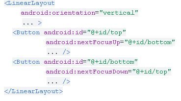
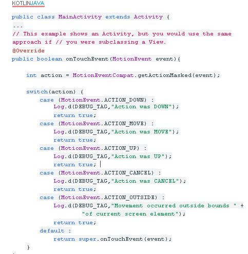
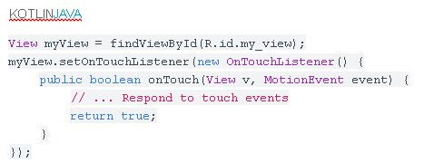
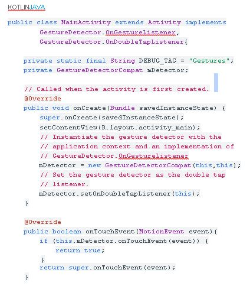
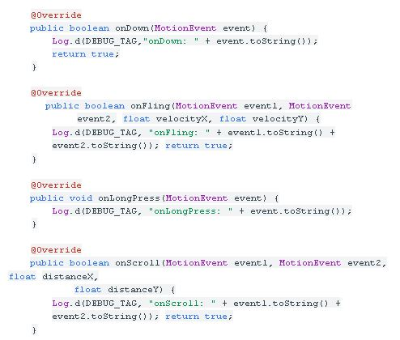
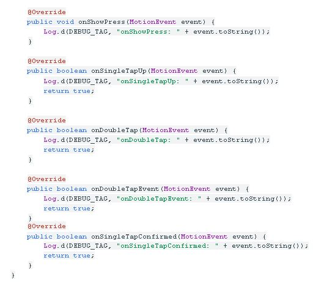
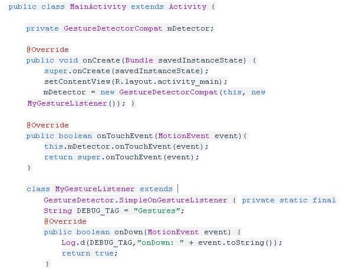
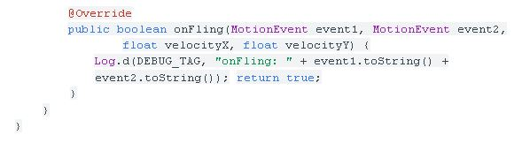

Touchscreen
18 de Enero de 2021
- Eventos Táctiles / Eventos de entrada
- Controladores de eventos
- Seguimiento de los movimientos de tocar y del puntero
Controladores de eventos
Si estás creando un componente personalizado desde Vista, podrás definir varios métodos de callback utilizados como controladores de eventos predeterminados.
onKeyDown(int, KeyEvent): Se llama cuando se produce un nuevo evento de tecla. ∙
onKeyUp(int, KeyEvent): Se llama cuando se produce un evento KeyUp. onTrackballEvent(MotionEvent): Se llama cuando se produce un evento de movimiento de la bola de seguimiento.onTouchEvent(MotionEvent). Se llama cuando se produce un evento de movimiento de la pantalla táctil.
onFocusChanged(boolean, int, Rect). Se llama cuando la vista gana o pierde foco
Existen otros métodos que debes conocer; métodos que no forman parte de la clase de vista, pero que pueden afectar directamente la forma en la que puedes usar los eventos. Por lo tanto, cuando administres eventos más complejos dentro de un diseño, considera estos otros métodos:
Activity.dispatchTouchEvent(MotionEvent): este método permite que tu Activity intercepte todos los eventos táctiles antes de que se envíen a la ventana. ViewGroup.onInterceptTouchEvent(MotionEvent): este método permite que un ViewGroup observe los eventos mientras se envían a las vistas secundarias.
ViewParent.requestDisallowInterceptTouchEvent(boolean). Llama a este método en una vista primaria para indicar que no debes interceptar eventos táctiles con onInterceptTouchEvent(MotionEvent).
Modo Táctil
Cuando un usuario navega en una interfaz de usuario con teclas direccionales o una bola de seguimiento, es necesario poner el foco en los elementos que se pueden accionar (como los botones) para que el usuario pueda ver lo que aceptará una entrada.Si el dispositivo tiene funciones táctiles y el usuario comienza a interactuar con la interfaz tocándola, ya no es necesario resaltar los elementos o poner el foco en una vista determinada.Cuando un usuario toca una tecla direccional o se desplaza con una bola de seguimiento, el dispositivo saldrá del modo táctil y encontrará una vista para poner el foco.
El estado del modo táctil se mantiene en todo el sistema (todas las ventanas y actividades).
Para consultar el estado actual, puedes llamar a isInTouchMode() a fin de ver si el dispositivo se encuentra actualmente en el modo táctil.
Cómo manejar el foco
El framework manejará el movimiento del foco de rutina en respuesta a las entradas del usuario.
A medida que se eliminan o se ocultan las vistas, o a medida que existen vistas nuevas disponibles.
Para cambiar si una vista puede tomar foco, llama a setFocusable(). En el modo táctil, puedes consultar si una vista permite el foco con isFocusableInTouchMode(). Puedes cambiar esto con setFocusableInTouchMode().
El movimiento del foco se basa en un algoritmo que encuentra el vecino más próximo en una dirección determinada. En casos poco frecuentes, es posible que el algoritmo predeterminado no coincida con el comportamiento previsto del desarrollador.

Si deseas declarar una vista como enfocable en tu IU (cuando tradicionalmente no lo es), agrega el atributo XML android:focusable a la vista en tu declaración de diseño. Fija el valor en true. También puedes declarar una vista como enfocable en el modo táctil
con android:focusableInTouchMode.
Para solicitar que se enfoque una vista en particular, llama a requestFocus().
Para escuchar eventos de foco (ser notificado cuando una vista recibe o pierde foco), utilizaonFocusChange(), como se explica en la sección Gestores de eventos que aparece anteriormente.
Detecta gestos comunes
Un "gesto táctil" ocurre cuando un usuario coloca uno o más dedos en la pantalla táctil y su aplicación interpreta ese patrón de toques como un gesto particular. En consecuencia, hay dos fases para la detección de gestos:
Reúna datos sobre eventos táctiles.Interprete los datos para ver si cumplen con los criterios de alguno de los gestos que admite su aplicación.
Clases de biblioteca de apoyo
Estas clases están en la biblioteca de soporte. Debe utilizar las clases de la biblioteca de compatibilidad siempre que sea posible para proporcionar compatibilidad con dispositivos que ejecutan Android 1.6 y superior.
MotionEventCompat no sustituye a la clase MotionEvent.
Proporciona métodos de utilidad estáticos a los que pasa su MotionEventobject para recibir la acción deseada asociada con ese evento.
Reunir datos
uando un usuario coloca uno o más dedos en la pantalla, esto activa la
callback onTouchEvent () en la Vista que recibió los eventos táctiles.
Para cada secuencia de eventos táctiles (posición, presión, tamaño, adición de otro dedo, etc.) que finalmente se identifica como un gesto, onTouchEvent () se activa varias veces.El gesto comienza cuando el usuario toca la pantalla por primera vez, continúa mientras el sistema rastrea la posición de los dedos del usuario y termina capturando el evento final de los dedos del usuario que abandonan la pantalla.A lo largo de esta interacción, MotionEvent entregado a onTouchEvent () proporciona los detalles de cada interacción. u aplicación puede usar los datos proporcionados por MotionEvent para determinar si ocurrió un gesto que le importa.
Capture eventos táctiles para una actividad o vista
Para interceptar eventos táctiles en una actividad o vista, anule la devolución de llamada onTouchEvent ().

Puede hacer su propio procesamiento de estos eventos para determinar si ocurrió un gesto.Este es el tipo de procesamiento que tendría que hacer para un gesto personalizado.GestureDetector le facilita la detección de gestos comunes sin procesar usted mismo los eventos táctiles individuales. Esto se analiza a continuación en Detectar gestos.
Capture eventos táctiles para una sola vista
Como alternativa a onTouchEvent (), puede adjuntar un objeto View.OnTouchListener a cualquier objeto View utilizando el método setOnTouchListener ().
Esto hace posible escuchar eventos táctiles sin subclasificar una Vista existente.

Tenga cuidado con la creación de un oyente que devuelva falso para el evento ACTION_DOWN.Si hace esto, no se llamará al oyente para la siguiente cadena de eventos ACTION_MOVE y ACTION_UP. Esto se debe a que ACTION_DOWN es el punto de partida para todos los eventos táctiles.Si está creando una vista personalizada, puede anular onTouchEvent (), como se describe anteriormente.
Detectar gestos
Android proporciona la clase GestureDetector para detectar gestos comunes. Algunos de los gestos que admite incluyen onDown (), onLongPress (), onFling (), etc. Puede utilizar GestureDetector junto con el método onTouchEvent () descrito anteriormente.
Detecta todos los gestos admitidos
Cuando crea una instancia de un objeto GestureDetectorCompat, uno de los parámetros que toma es una clase que implementa
la interfaz.
GestureDetector.OnGestureListener. GestureDetector.OnGestureListenern notifica a los usuarios cuando se ha producido un evento táctil en particular. Para hacer posible que su objeto GestureDetector reciba eventos, anula la Vista o
El método onTouchEvent () de Activity y pasar todos los eventos
En el siguiente fragmento, un valor de retorno verdadero de la persona en los métodos indica que ha manejado el evento táctil. n valor de retorno de falso pasa los eventos a través de la pila de vistas hasta que el toque se maneja con éxito.



Detecta un subconjunto de gestos compatibles
Si solo desea procesar algunos gestos, puede
extienda GestureDetector.SimpleOnGestureListener en lugar de implementar la interfaz GestureDetector.OnGestureListener.
Detecta un subconjunto de gestos compatibles
Si solo desea procesar algunos gestos, puede
extienda GestureDetector.SimpleOnGestureListener en lugar de implementar la interfaz GestureDetector.OnGestureListener.
GestureDetector.SimpleOnGestureListener proporciona una implementación para todos los métodos on devolviendo false para todos ellos. Puede anular solo los métodos que le interesan.


rea una clase que amplía GestureDetector.SimpleOnGestureListener y
anula onFling () y onDown ().Ya sea que use GestureDetector.OnGestureListener o no, la mejor práctica es implementar un método onDown () que devuelva verdadero. Esto se debe a que todos los gestos comienzan con un mensaje onDown (). Si regresa falso de onDown (),
como lo hace GestureDetector.SimpleOnGestureListener de forma predeterminada, el sistema asume que desea ignorar el resto del gesto y los otros métodos
ofGestureDetector.OnGestureListener nunca se llama.Esto tiene el potencial de causar problemas inesperados en su aplicación. La única vez que debe devolver falso desde onDown () es si realmente desea ignorar un gesto completo.